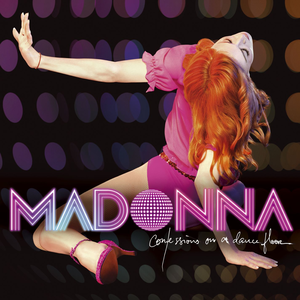
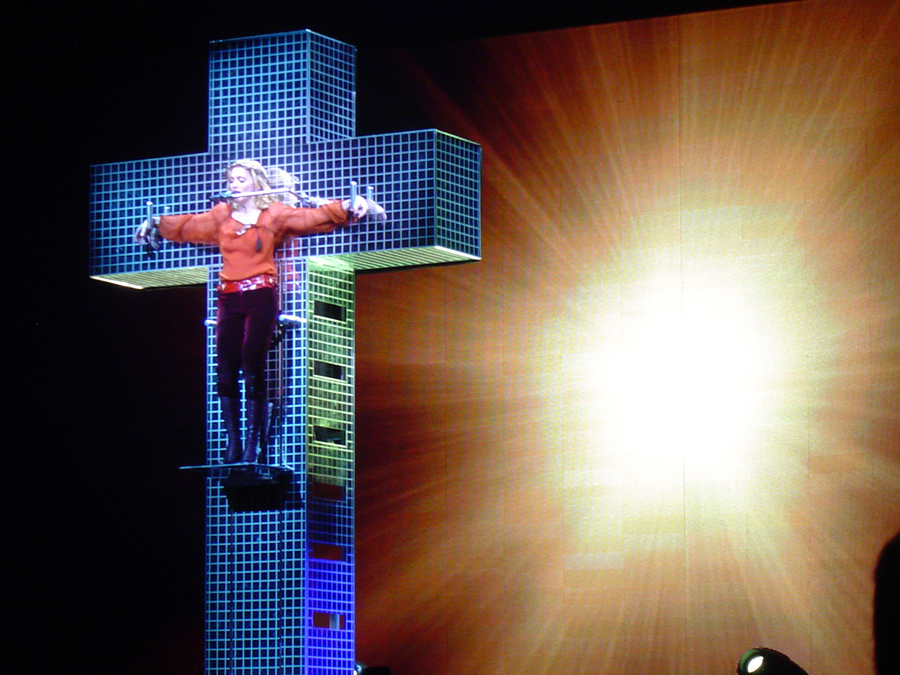
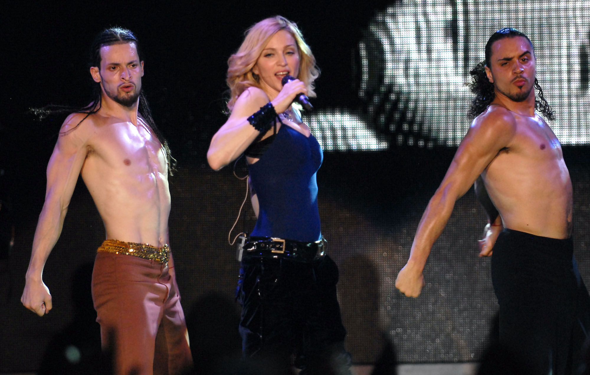

Confessions on a Dance Floor es el décimo álbum de estudio de Madonna. Lanzado a la venta en 2005, este proyecto fue un éxito comercial y de crítica, sirviendo como el gran regreso de la Reina del Pop al estrellato tras el estrepitoso fracaso de American Life. El álbum se caracteriza por su sonido dance y electrónico, con influencias del disco y el house. Contiene varios sencillos exitosos, incluyendo "Hung Up" que fue #1 en decenas de países. Además de "Sorry" que llegó al #1 en el Reino Unido. Sin embargo, el recibimiento del álbum en E.E.U.U. fue más moderado debido al baneo que Madonna tenía en la radio por las controversias de la era de American Life. El álbum recibió elogios por su cohesión y producción, es considerado uno de los mejores trabajos de Madonna en su carrera y su álbum más icónico desde los 80's.

Madonna siendo crucificada durante el Confessions Tour de 2006 mientras canta Live to Tell.

Madonna cantando en Coachela por primera vez en la edición del 2006.